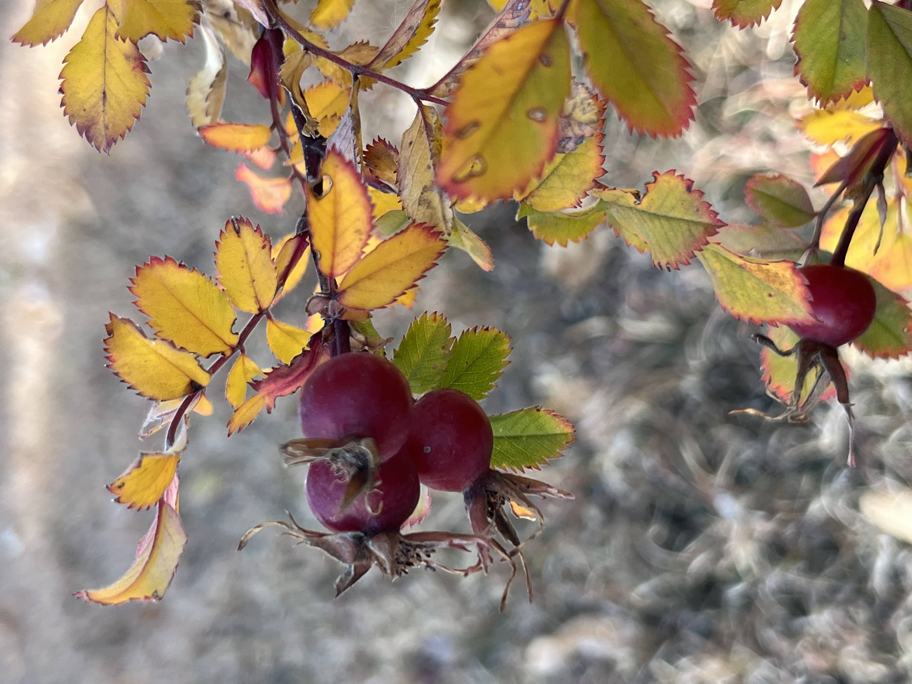
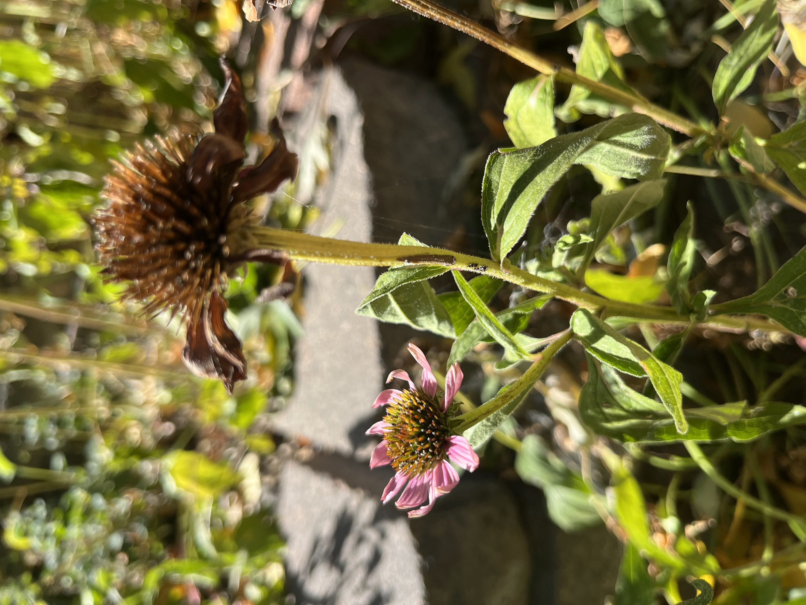
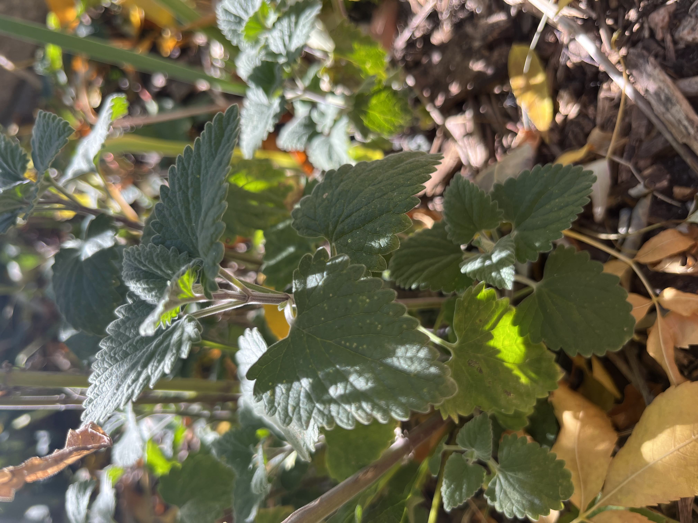
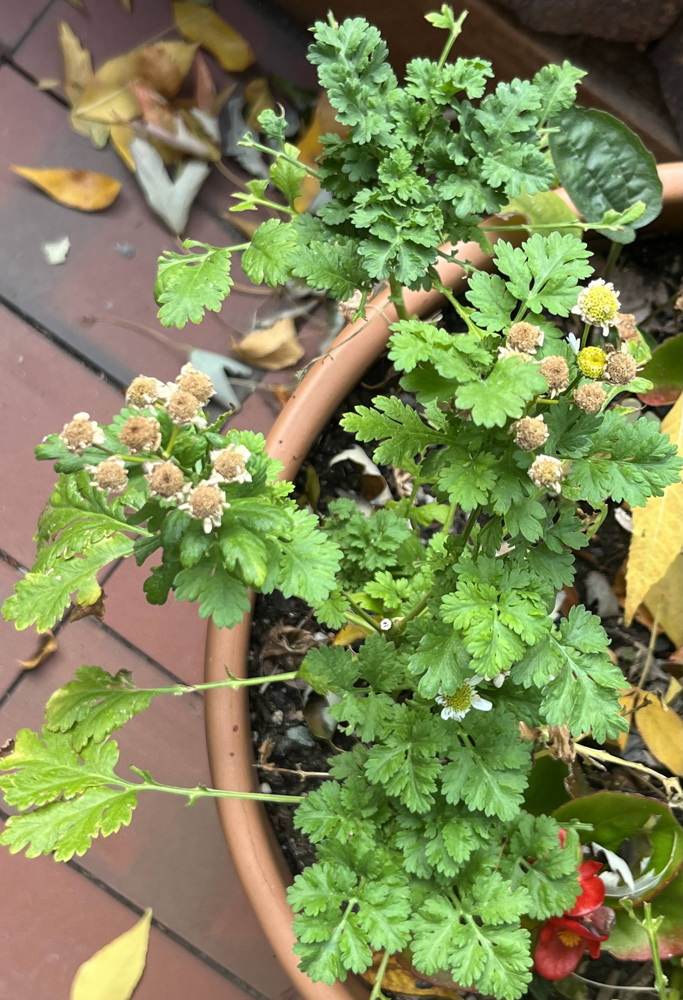
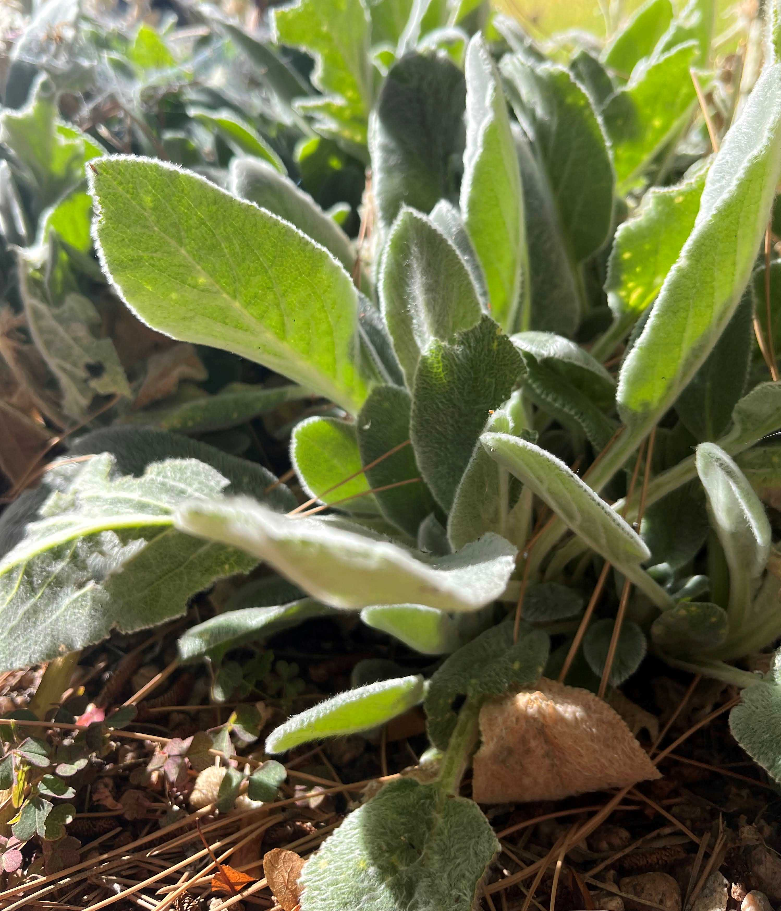
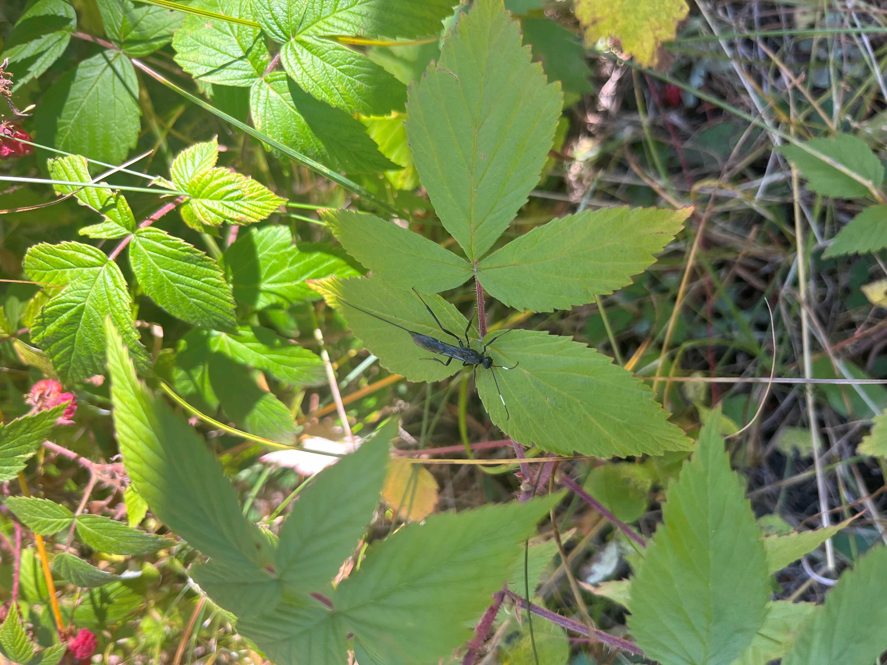
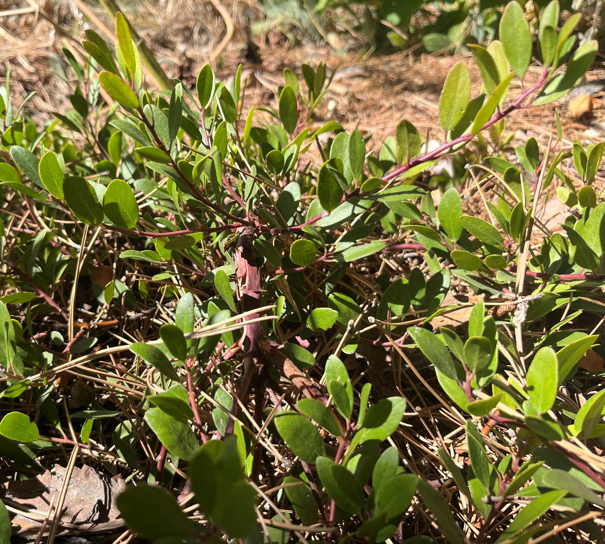

Making Tea From the Garden
Tea in my own Yard

Purple echinacea, popular garden flower and tea for boosting the immune system.
Photo by Meghan Smedes
I love to drink tea! I buy it from the store for so many things. I like green tea for immunity and caffeine. I like herbal teas for flavor and health. For example, I love a good sleep tea to ease headaches and to relax. I like lemon tea for sore throats and ginger tea for stomach aches.
It ocurred to me recently that I can make my own tea using plants in my yard. I have a yard that is about 85% native-to-Colorado plants and 15% non-native. I've always known that these plants have historic uses by the indigenous people of my area and by those who brought plants here from around the world. However, except for the occasional nibble of a berry along a hikng trail, I've rarely used these plants myself, until now. Below, I share how I preserved herbs from my yard to use as tea.
How I Made Tea from my Garden

A cup of tea made from scratch.
Photo by Meghan Smedes
To make tea from the garden, there are different methods for drying them. They can be dried under a shady tree on a very warm day. One way to do this is to sandwich plant parts between two tea towels on a flat surface, preferably one with good air flow like a wicker table. Another way is to use an electric food dehydrator. This is the method I used and it is the one I will reference in the steps below.
Steps for Making Tea
- Choose plants: This may take some research to find plants with desired uses. Make sure you have determined correct species of plants. You would not want to mistake a poisonous plant for something else and use it in your tea! A book I found very helpful for this step is Medicinal Herbs of the Rocky Mountains: A Field Guide to Common Healing Plants by Blake Burger.
- Harvest plants: To harvest plants, it is often recommended to take young, tender leaves before the plant flowers. In many cases, flowers, berries, stems and even roots can be dried and used in teas. Choose flowers that are at their peak of blooming, berries that are ripe, and roots should be collected in the fall.
- Dry plants: Clean plants in running water to remove any bugs or dust. To preserve the oils and nutrients, keep plants whole, with the exception of larger roots, which can be sliced. Place plant parts in a single layer in the electric drier. Follow drier instructions for plants. Plants will dry in 24-48 hours.
- Prepare storage containers: While plants dry, wash and boil jars for 10 minutes to disinfect. Suction lids such as mason jar lids do not need to be boiled as it could weaken the seal.
- Place dried Plant Material into Containers: Store containers out of direct sunlight.
- Make Tea! Put one to two tablespoons of your selection of plants into boiling water. It is best to take the boiling water off of the burner, let it stop boiling and then pour over leaves. Let is steep covered for 10-15 minutes. Cheers to home-made tea from the garden!

Tea can be stored in jars.
Photo by Meghan Smedes
Examples of Garden Teas
| Herbs | Uses | Photos |
|---|---|---|
| High in vitamin C, adds flavor. |

|
|
| Boost immunity during sickness. |

|
|
| Ease anxiety, nervousness, stomach cramps. |

|
|
| Ease migraines, headaches. |

|
|
| Good for sore throats, heart, liver. |

|
|
| Ease cramping during periods and labor. Regulate Menstruation. |

|
|
| Help for UTI's and swelling. Cleanses mouth sores. |

|
Websites with more information:
Medicinal Herbs of the Rocky Mountains
This page is authored by Meghan Smedes, Last updated October 14, 2023. Lab 6 for Web Mapping.